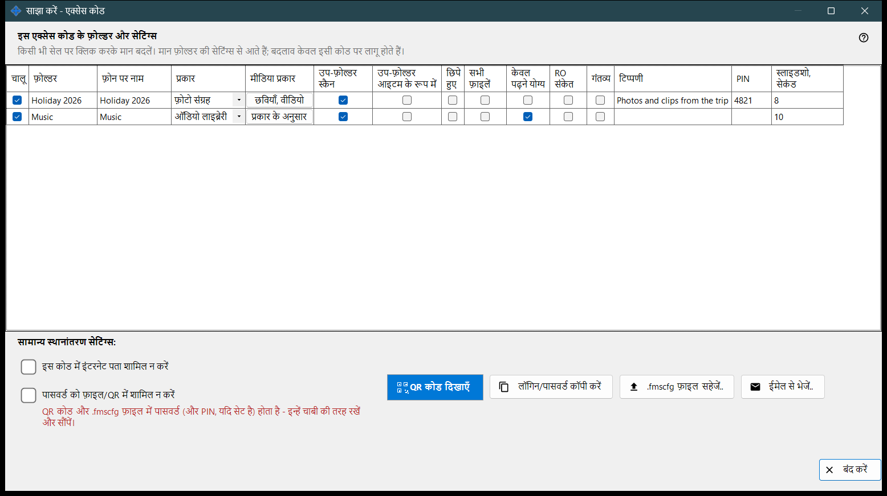
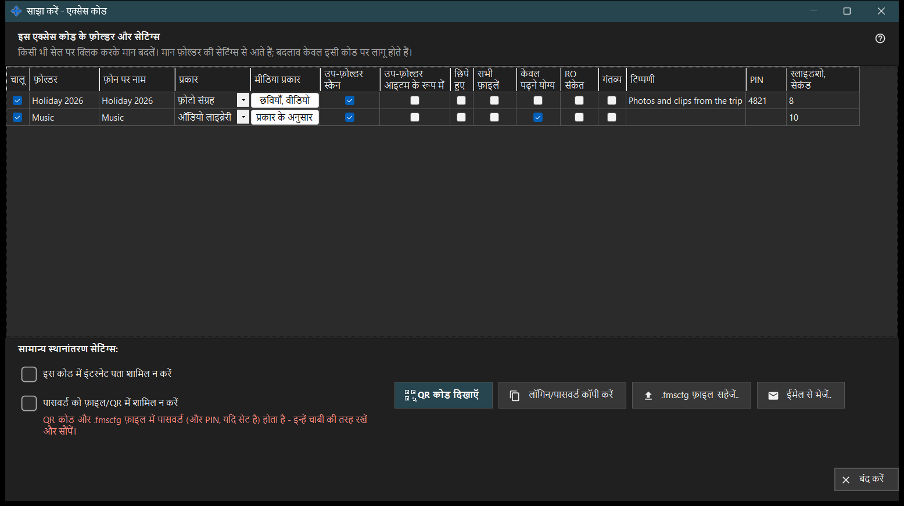

साझा करें - एक्सेस कोड
यह किस लिए है
फ़ोन के लिए एक्सेस कोड बनाता है: एक QR कोड और एक .fmscfg फ़ाइल, जिनमें पता, लॉगिन और चुने हुए फ़ोल्डर होते हैं। यह साझाकरण चालू रहने पर मुख्य विंडो के साझा करें बटन से खुलता है, और कोड देने से पहले जाँचता है कि फ़ोन सच में पीसी तक पहुँच सकता है।


इस क्रम में
- जिन फ़ोल्डरों को कोड में रखना है उन पर निशान लगाएँ।
- तालिका की जिस भी कोशिका को इस कोड के लिए अलग रखना है उसे बदलें।
- ज़रूरत हो तो इस कोड में इंटरनेट पता शामिल न करें या पासवर्ड को फ़ाइल/QR में शामिल न करें पर निशान लगाएँ।
- पहुँच की जाँच का इंतज़ार करें।
- QR कोड दिखाएँ, .fmscfg फ़ाइल सहेजें, उसे ईमेल से भेजें या लॉगिन और पासवर्ड कॉपी करें।
तत्व
इस एक्सेस कोड के फ़ोल्डर और सेटिंग
हर साझा फ़ोल्डर की एक पंक्ति, स्तंभ: चालू, फ़ोल्डर, फ़ोन पर नाम, प्रकार, मीडिया प्रकार, उप-फ़ोल्डर स्कैन करें, उप-फ़ोल्डर आइटम के रूप में, छिपे हुए, केवल पढ़ने योग्य, RO संकेत, गंतव्य, टिप्पणी, PIN और स्लाइडशो, सेकंड। बदलने के लिए कोशिका पर क्लिक करें। PIN स्वयं कभी नहीं दिखता: सही का निशान बताता है कि वह सेट है, और क्लिक से एक छिपा हुआ फ़ील्ड खुलता है जहाँ आप उसे सेट कर सकते हैं, बदल सकते हैं या हटा सकते हैं। मान हर फ़ोल्डर की अपनी सेटिंग से शुरू होते हैं और बदलाव केवल इसी कोड पर लागू होते हैं। केवल पढ़ने योग्य सर्वर पर असली ताला है; RO संकेत केवल ऐप में संपादन के बटन छिपाता है। गंतव्य फ़ोल्डर पर हमेशा लिखा जा सकता है, इसलिए उस पर केवल पढ़ने योग्य लागू नहीं होता।
साझा स्थानांतरण सेटिंग
इस कोड में इंटरनेट पता शामिल न करें से फ़ोन केवल स्थानीय नेटवर्क से जुड़ता है; यह सर्वर को बंद नहीं करता, और पूरे साझाकरण के लिए इंटरनेट पहुँच प्रबंधक की सेटिंग्स में बंद की जाती है। पासवर्ड को फ़ाइल/QR में शामिल न करें कोड से पासवर्ड हटा देता है; उसे अलग से दें। पासवर्ड के बिना कोड फ़ोन स्वीकार करेगा या नहीं, यह ऐप के संस्करण पर निर्भर है।
पहुँच की जाँच
जब तक स्थिति ली जाती है, विंडो यह बताती है। यदि सर्वर नहीं चल रहा, या कोई फ़ोल्डर चुना नहीं गया, या कोई काम का पता नहीं है, तो एक संकेत बताता है कि क्या कम है। जाँच पूरी न हो तो कोड और फ़ाइल नहीं दिए जाते: पहुँच दोबारा जाँचें दबाएँ।
QR कोड दिखाएँ
QR कोड और .fmscfg फ़ाइल फ़ोल्डरों तक पहुँच खोलते हैं और उनमें पासवर्ड तथा, यदि सेट हो, PIN होता है - उन्हें चाबी की तरह सँभालें और दें। यदि सेटिंग QR कोड के लिए बहुत बड़ी हों, तो फ़ाइल सहेजकर उसे भेजें।
फ़ाइल, ईमेल और लॉगिन
.fmscfg फ़ाइल सहेजें.. फ़ाइल लिखता है; जिस फ़ाइल सिस्टम में पहुँच सीमित नहीं की जा सकती, या ऐसे फ़ोल्डर में जिसे दूसरे बदल सकते हैं, वहाँ विंडो मना कर देती है क्योंकि फ़ाइल में एक्सेस की होती है। ईमेल से भेजें.. फ़ाइल को एक नोट के साथ जोड़ता है कि इसे Android ऐप में आयात करें और बाद में मिटा दें। लॉगिन/पासवर्ड कॉपी करें दोनों को क्लिपबोर्ड पर रखता है।
प्रबंधक सेटिंग · SFTP साझाकरण सेटिंग · एक्सचेंज सर्वर सेटिंग